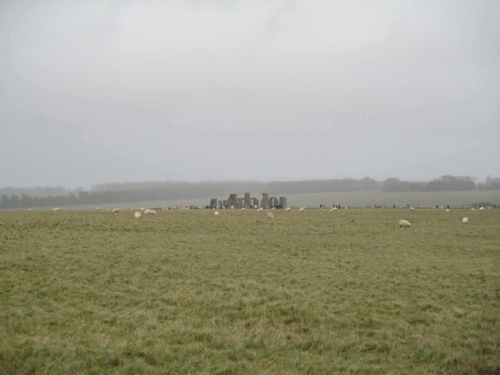
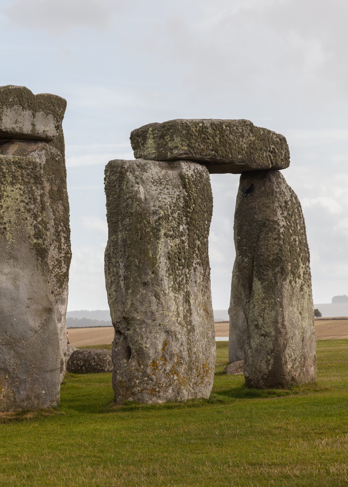
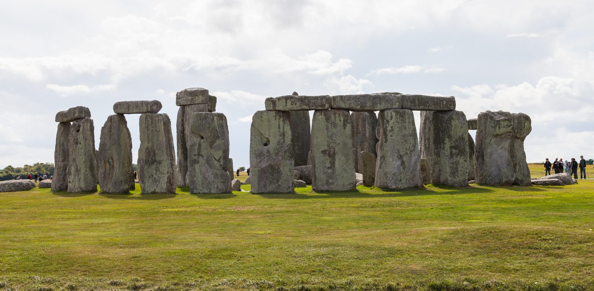

#01 Stonehenge 巨石阵
The Mystery：Built in multiple phases, Stonehenge's heaviest sarsen stones weigh about 25 tonnes, while its "bluestones" came from the Preseli Hills of Wales, 225 km away. How Late Neolithic people moved these blocks over such distances and raised them in precise mortise-and-tenon joints — without wheeled vehicles or metal tools — remains unresolved. The monument's main axis aligns with the midsummer sunrise; whether it served as an observatory, a burial ground, a healing sanctuary, or a place of ancestor worship has been debated for over a century. A 2024 study further traced the central Altar Stone to northeastern Scotland, some 750 km away, adding a new transport puzzle.
Mainstream Archaeological View：A multi-phase ritual and funerary monument complex; the solstitial alignments served a seasonal calendar and ancestor cult, reflecting the complex social organisation of Late Neolithic society.
Open Controversy：No consensus on how the stones were moved (overland, by water, or by glacier); the monument's exact function remains an open question.
Photographs：

Photo: Simon Burchell · CC BY-SA 4.0

Photo: Diego Delso · CC BY-SA 4.0

Photo: Diego Delso · CC BY-SA 4.0